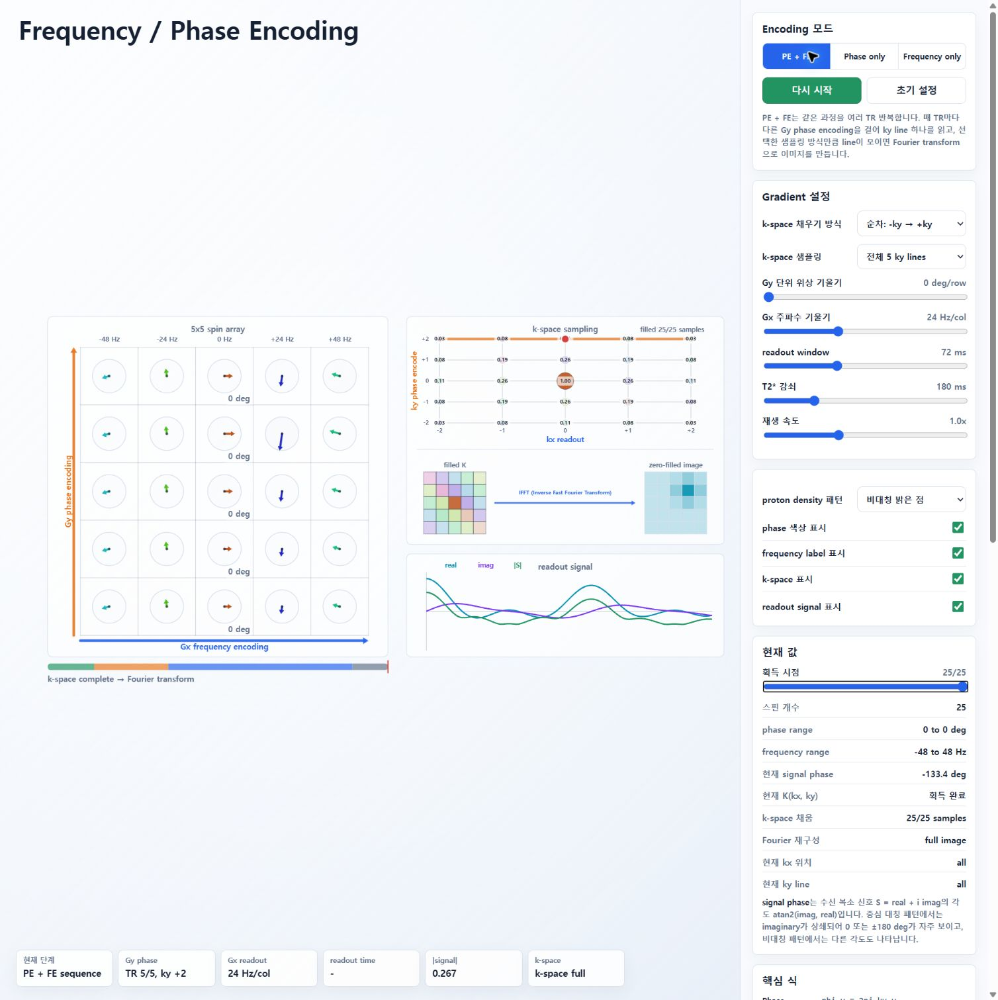
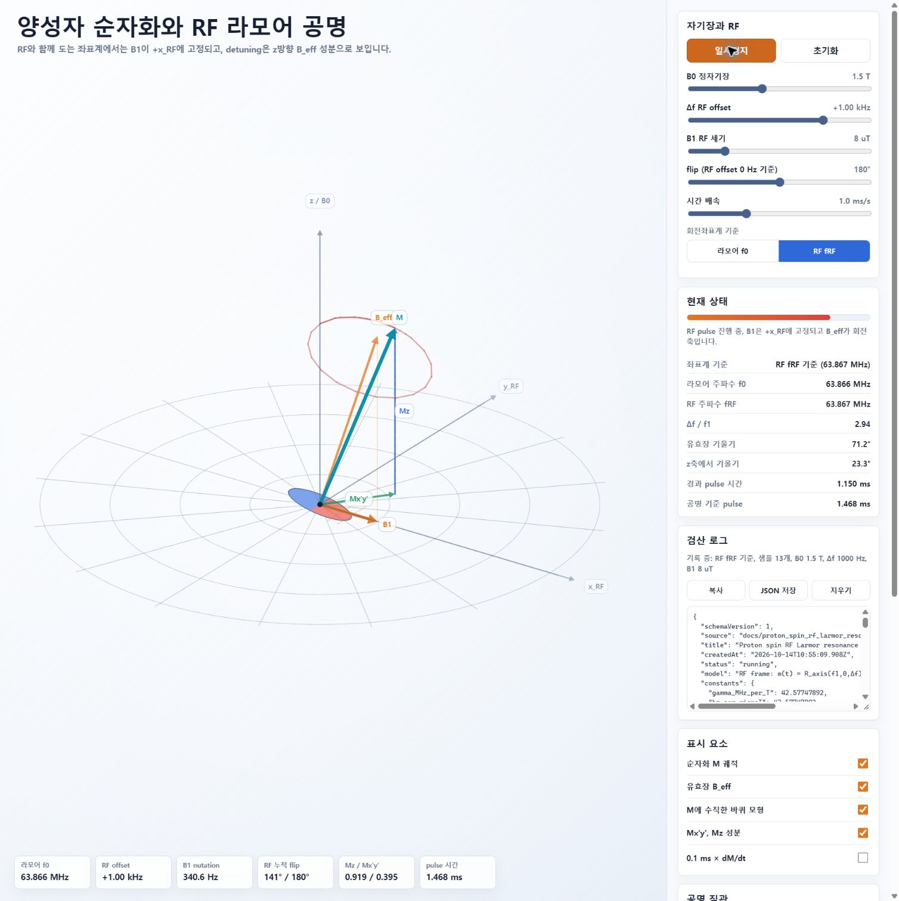

MR Physics HTML 시뮬레이션 과학·교육 검증 — 수정 전 원본
검토일: 2026-10-14, 한국 시간 기준.
이 문서는 원본 커밋 0006c3b의 수정 전 감사 기록입니다. 현재 구현의 변경 사항은 수정 후 검산을 참조하세요.
판정: 기본 계산 중 정확한 부분은 있지만, 현재 버전을 과학적 오류와 학습자 오해가 없는 상태로 승인할 수 없다. 우선적으로 공간 부호화의 데이터 연결, RF offset 부호, spin echo 동역학, 시퀀스 시간 기준을 수정해야 한다.
GitHub 기본 브랜치 main의 최신 커밋은 0006c3b01c92ccf85b07e8fc63adc66197a53149이다. 검토 시작과 종료에 원격 HEAD와 refs/heads/main을 git ls-remote로 확인했으며 로컬 HEAD와 동일하다. 검토 대상은 해당 커밋 docs의 시뮬레이션 4개이며, index.html은 진입 링크 확인에 포함했다. b_eff.md는 HTML과 직접 연결된 부호 설명만 대조했다. 두 이론 문서 전체를 별도로 감사한 결과는 아니다. 검토 중 별도로 추가된 로컬 kspace_inverse_fourier.html 및 링크 변경은 아직 이 GitHub 커밋에 포함되지 않아 이번 검증 범위에서 제외하고 그대로 보존했다. 아래 코드 링크와 재현 스크립트는 검토한 커밋에 고정했다.
방법: 코드의 물리 함수와 설명 확인 → 기준 방정식과 대조 → HTML에서 실제 함수를 추출해 Node.js에서 실행 → 독립적인 회전식/RK4 계산과 비교 → 공개 GitHub Pages 4개 화면 확인. 코드를 수정하거나 GitHub에 게시하지 않았다.
우선순위 기준: P1은 핵심 원리의 오학습 또는 틀린 정량 결과를 만드는 문제, P2는 특정 조건의 계산·표시 오류 또는 근사 범위를 오해하게 만드는 문제다. 번호는 서로 다른 수정 항목이며, 같은 파일에 여러 원인이 있을 수 있다.
| 대상 | 검토 판정 |
|---|---|
| RF 라머 공명 | 온공명 회전과 pulse duration은 정확. RF offset 부호는 수정 필요 |
| 양성자 MR | 온공명 RF와 자유 이완의 기본식은 정확. spin echo·TE·chemical signal·RF 중 detuning 처리 수정 필요 |
| Frequency / Phase Encoding | 이상적 DFT/역DFT는 정확. 화면 신호와 k-space가 서로 다른 모델이므로 획득 시뮬레이션으로는 수정 필요 |
| 자전거 바퀴 | 정성적 정상 세차 비유로 활용 가능. 저속 적용 범위, 총각운동량, 진자 근사, 그림 축척의 설명 보완 필요 |
1. [P1] 화면의 수신 신호로 k-space를 획득하지 않는다.
위치: rawKspaceValue, phaseAt/decayAt/signalAt, 재구성.
스핀 화살표와 수신 신호는 phaseDegPerRow, frequencyHzPerCol, readoutMs, t2starMs를 사용한다. 그러나 저장되는 K는 원래 밀도 패턴에서 직접 계산한 이상적 DFT다. K 계산에는 이 네 매개변수가 전혀 들어가지 않는다.
재현: 비대칭 밝은 점을 선택하고 Gy 위상 기울기를 0 deg/row로 설정한 뒤 획득 시점을 끝으로 이동한다. 화면은 서로 다른 ky 5개를 모두 얻었다고 표시하며, 원래의 2D 점 패턴을 그대로 복원한다. 실제로 y 방향 위상 부호화를 하지 않았다면 이와 같은 서로 다른 ky 정보를 얻을 수 없다. 실제 MRI의 수신 신호는 해당 시점의 k-space 값이고, k 위치는 gradient 면적과 연결되어야 한다. Çukur 등, 식 (6)–(8)
검산: Gy=0, Gx=60 Hz/col, readout=160 ms, T2*=50 ms로 바꿔도 K와 완성 영상의 변화량은 모두 0이었다. 이는 T2*를 조절해도 영상에 감쇠 영향이 없는 원인이기도 하다.
학습 위험: “부호화가 없어도 위치를 복원한다”, “k-space는 획득 신호와 별개다”, “readout 감쇠는 영상에 영향을 주지 않는다”는 잘못된 인과관계를 만든다.
수정 방향: 스핀 위상 → 복소 수신 신호 → 같은 복소 샘플의 저장 → 역변환을 한 계산 경로로 연결한다. 이상적 DFT를 참고값으로 남기려면 별도의 기준값으로 명시한다. Gradient 값을 자유롭게 바꾸면 실제 k 위치가 변하므로, 고정 격자 DFT를 유지할 때는 격자에 맞는 gradient 면적과 ADC 간격을 강제해야 한다.

2. [P1] readout 시작의 실제 위상은 kx=0인데 화면은 kx=-2로 표시한다.
화면 kx는 readout 진행률을 -2부터 +2로 변환한다. 반면 실제 readout 위상은 0부터 누적되고, 음의 kx를 만드는 prephasing은 없다. Gy 기본값 42°/row도 5점 DFT의 ky 한 칸에 필요한 72°/row와 일치하지 않는다. 기본 readout의 총 위상 진행 역시 인접 열 기준 24 Hz × 72 ms = 1.728 cycle로, 고정 DFT 격자의 kx=-2→+2에 필요한 0.8 cycle과 다르다.
재현: 중심 우선, 첫 ky=0 line의 readout 시작. 표시된 kx=-2에서 수신 신호는 정규화 값 1.000이다. 같은 점에 표시·저장되는 이상적 K(-2,0)의 정규화 크기는 0.0003174다. 크기 자체가 다르므로 수신 복소 신호의 부호 convention만으로 해결되는 문제가 아니다.
수정 방향: phi=-2π(kx*x+ky*y)/N와 ADC 샘플의 k 좌표를 공유한다. -kx에서 시작할 때는 실제 prephasing 위상도 넣는다. 서로 다른 물리 단위와 정수 DFT 인덱스의 관계를 표시한다.
3. [P1] RF offset 정의와 유효장의 z성분 부호가 반대다.
위치: offset 정의와 수식, physicsAt, 유효장 그림.
화면과 RF 주파수 계산은 Δf=fRF-f0를 사용한다. 양성자의 양의 γ, 오른손 좌표계, dM/dt=γ M×B를 쓰면 RF 좌표계에서 다음이 성립한다.
γ̄ = γ/(2π)
Beff,z = B0 - ωRF/γ
= -(ωRF-ω0)/γ
= -Δf/γ̄
B1,라머좌표계 = B1 (cos(2πΔf t), -sin(2πΔf t), 0)즉 +RF offset일 때 유효장 z성분은 음수다. 그러나 구현은 회전축 (f1,0,+Δf), 라머계 변환 Rz(+2πΔf t)를 쓴다. University of Washington, rotating-frame 유도
재현: B0=1.5 T, B1=8 µT, Δf=+1000 Hz, 공명 기준 180° pulse. RF계 최종 M은 구현 ( +0.595044, -0.101043, +0.797316 ), 일관된 부호의 기준식은 ( -0.595044, -0.101043, +0.797316 )이다. 라머계에서도 x성분의 부호가 반대다. 독립 RK4 계산과 수정된 해석식의 차이는 4×10⁻¹⁵ 미만이었다.
|Mz|와 |Mxy|만 보면 부호 오류가 숨겨진다. 최종 위상·횡방향·유효장 방향을 배우는 사람에게는 실제 차이가 된다.
같은 모순이 b_eff.md:701의 B0-ωRF/γ와 b_eff.md:716의 Δω=ωRF-ω0 및 양의 Δω/γ 사이에도 있다. 부호 convention의 자유는 관련 정의를 모두 일관되게 바꿀 때만 유효하다.
수정 방향: 현재 Δf 정의를 유지하면 RF계 축 z성분과 라머계 변환 위상의 부호를 함께 반전하고, 식·그림·로그·기울기 표기도 맞춘다. 또는 Δf를 f0-fRF로 정의하고 주파수 계산까지 함께 바꾼다.
내장 검산 로그는 대부분 physicsAt의 결과를 같은 함수와 비교하며, 독립된 closed-form 확인은 Δf=0에만 적용한다. 따라서 현재 로그의 통과 결과는 offset 부호의 검증 증거가 아니다.

4. [P1] spin echo의 180° 펄스 대신 위상 변화 속도의 부호를 뒤집는다.
위치: sequenceState, 특히 위상 분기.
180° pulse 전 phase=2πΔf*t, 이후 phase=2πΔf*(TE-t)를 사용한다. 펄스 시점에서 위상은 연속이고 회전 속도만 +Δf→-Δf로 바뀐다. 물리적인 refocusing pulse는 자화 벡터를 반사하는 180° 회전이며, 이후 각 isochromat은 원래와 같은 주파수·회전 방향으로 진행한다. ISMRM, Echoes 설명
재현: T1W preset, Δf=35 Hz, TE=15 ms. refocusing 전후 화면 위상 변화율은 +0.219911→-0.219911 rad/ms다. 그림에서 +x' B1을 그리지만 Rx(π)는 M에 적용하지 않는다. 회복 중인 Mz 역시 180° pulse에서 반전되지 않고 양의 값으로 계속 자란다.
더구나 주파수 분포가 없는 하나의 벡터만 돌고, 횡자화 크기는 priorMz*exp(-t/T2)로 계속 감소한다. 따라서 spin echo가 형성되면서 합성 신호가 다시 커지는 과정은 구현되어 있지 않다. 단일 isochromat에서 크기가 증가하지 않는 것 자체는 잘못이 아니지만, 이 상태를 dephasing/rephasing 및 spin echo 형성으로 설명하는 것은 부정확하다.
독립된 5-isochromat 예제(Δf=-80,-40,0,40,80 Hz)에서는 합성 횡자화가 0 ms의 0.42625에서 7.5 ms의 0.09594로 줄고, 실제 180° 회전 후 15 ms의 0.35337로 재형성됐다.
수정 방향: 여러 isochromat에 각각 정해진 Δf를 두고, 실제 RF 회전과 T1/T2를 적용한 뒤 벡터 합을 표시한다. 180° 뒤에도 Δf 부호는 유지한다. 단일 벡터만 사용할 경우 spin echo 형성 시뮬레이션이라는 설명을 줄이고 단일 isochromat의 동작임을 명시해야 한다.
5. [P1] TE 타임라인과 실제 동역학의 시간이 4 ms 어긋난다.
위치: sequenceEvents, rfWindowMs 및 after, chemical preset.
타임라인의 180°와 TE는 각각 TE/2, TE에 있다. 그러나 동역학에서는 4 ms 길이의 RF 구간을 빼고 얻은 after=t-4를 다시 TE/2와 TE에 비교한다. T1W의 TE=15 ms는 동역학상 약 19 ms에 도달한다.
Chemical shift의 3 T 기본 TE=2.3 ms에서는 더 명확하다. 타임라인의 TE 시점에도 90° excitation, RF active 상태이고, 물/지방 위상 드리프트를 기준으로 하는 TE readout은 6.3 ms에서 일어난다. 따라서 TE에서 물과 지방이 같은 위상인지 판단하는 화면과 표시 시간은 서로 맞지 않는다.
수정 방향: RF pulse 중심을 기준으로 물리 시간축을 정의한다. RF의 화면상 확대 재생 길이와 실제 pulse duration은 구분하되, 화면을 느리게 보여 주기 위해 물리 시간에 4 ms를 임의로 추가하지 않는다. 유한 pulse 모델이라면 RF pulse 중심 간격과 echo 중심을 기준으로 TE를 계산한다.
6. [P1] Chemical shift의 signal estimate와 표시 자화가 같은 정규화 기준을 사용하지 않는다.
위치: chemicalSignalAtTE, water/fat vector, signal 표시.
물·지방 벡터는 priorMz=1-exp(-TR/T1)를 곱한다. 반면 chemicalSignalAtTE는 그 인자를 제외한다. 3 T, TR=120 ms, T1=900 ms, TE=2.3 ms, T2=70 ms, fat fraction=40%에서 priorMz=0.1248267이다.
동역학의 해당 readout 시점에서 합성 횡자화/M0는 0.12034인데 signal estimate는 0.96402 S/S0이다. 비는 8.0111이다. 같은 평형 자화에 대한 정규화라면 맞지 않는다. 또한 TR을 바꿔도 estimate는 바뀌지 않는 반면 벡터는 바뀐다.
별도의 excitation 직후 자화를 S0로 정의하면 estimate를 설명할 여지는 있지만, UI에는 그런 정의가 없고 다른 모드와의 정규화도 일관되지 않다.
수정 방향: signal estimate를 벡터 합과 같은 경로에서 계산한다. TE 예측값과 현재 신호를 구분하고 각각의 S0 정의를 명시한다. 현재의 90° saturation 가정을 유지하면 TE 예측값에도 priorMz를 포함한다.
7. [P1] MR 시뮬레이션에서 RF pulse 중 detuning을 무시한다.
위치: 회전좌표계 Δf control, physics.
RF가 켜진 동안 M은 Δf와 무관하게 항상 Mz=cosθ, My=sinθ로 움직인다. Δf는 RF가 끝난 뒤 자유 세차에만 적용된다. 온공명 hard-pulse 한정 모델로는 가능하지만, 그 한정이 화면에 설명되어 있지 않고 slider가 RF와 함께 노출된다.
재현: B1=1 µT, Δf=120 Hz, nominal 90° pulse. 구현은 Mz=0, |Mxy|=1이다. 이완을 무시하더라도 유효장 회전 기준값은 Mz=0.88652, |Mxy|=0.46268, 실제 기울기=27.56°다. 정량 차이가 크다. 공명 밖에서는 회전축이 기울어진다는 근거는 UW rotating-frame 설명에 있다.
수정 방향: RF 중에도 detuning이 포함된 Bloch 회전/적분을 적용한다. 또는 모델을 의도적으로 온공명 pulse로 제한하고 Δf 조절을 pulse 후 효과로 분명하게 표시한다.
8. [P2] 불완전 k-space의 역변환에서 허수부를 버린 뒤 |실수부|를 영상으로 표시한다.
위치: reconstructedImage, intensity.
실수부는 value, 허수부는 residual로 구해 두었지만 표시에는 abs(value)만 쓴다. 전체 k-space와 실수 밀도 패턴에서는 허수부가 상쇄되므로 문제가 숨겨진다. 비대칭 부분 샘플링에서는 그렇지 않다. 복소 역변환을 magnitude 영상으로 표시하려면 hypot(real,imaginary)가 필요하다. 이것은 Fourier 식에서 직접 도출되는 차이다.
재현: 비대칭 밝은 점 + partial Fourier 4 lines. 한 pixel의 역변환은 0.152875 + 0.088660i다. 화면에 쓰는 |real|은 0.152875, 실제 magnitude는 약 0.176724다. 무시된 허수부가 부동소수점 오차 수준이 아니다.
수정 방향: 복소값을 보존해 magnitude/phase를 표시하거나, 실수부 영상이라면 부호까지 보존하고 real{IFFT}라고 명시한다. 현재 구현은 누락 샘플을 0으로 채우는 예제이며, 별도의 partial-Fourier 복원 알고리즘을 구현한 것은 아니다. UI의 zero-filled 설명은 적절하지만 옵션명에 이 차이를 더 드러낼 수 있다.
9. [P2] 저속 자전거 바퀴의 실제 운동과 정상 세차 비유가 구분되지 않는다.
ω=0 부근만 진자 모드이고 모든 나머지 ω에서 Ω=τ/(Iω)를 적용하며 축의 처짐을 0으로 강제한다. 기본값의 Ω/ω는 4.576/7=0.654, ω=1 rad/s에서는 32.033이다. 이 조건에서 spin 성분만을 전체 L로 취급하는 고속 근사를 일반적인 바퀴 운동의 정량 예측으로 읽기는 어렵다. 고속 spin이 지배하고 세차 기여가 작다는 근사의 맥락은 Feynman Lectures I-20에 설명되어 있다.
이 비율만으로 수평 정상 세차가 수학적으로 불가능하다고 판정한 것은 아니다. 특정 초기 세차 속도를 부여한 이상적 정상 운동은 별도로 가능하다. 문제는 그런 초기조건이 설명되지 않고, 일반적인 놓아주는 실험의 nutation·축 처짐·총각운동량을 계산하지 않으며, 표시 L이 사실상 spin 성분이라는 점이다.
얇은 고리와 질량 없는 축을 가정하면 기본값에서 I_perp,pivot=m(r²+R²/2)=0.331875 kg·m²다. 세차에 따른 수직 각운동량은 약 1.519 kg·m²/s로, 표시 spin L=1.286 kg·m²/s보다 작지 않다.
수정 방향: “규정된 정상 세차의 정성적 비유” 및 L_spin을 명시하고 초기조건을 설명한다. 실제 떨어뜨리는 바퀴 동역학을 목표로 한다면 Euler 방정식과 횡관성모멘트를 포함한다. 단순히 ω=0만 다른 모드로 바꾸는 것은 실제 운동의 연속적인 전이를 재현하지 않는다.
10. [P2] 자전거 바퀴 진자 근사와 그림의 길이 축척이 일치하지 않는다.
위치: 진자 관성모멘트, 계산 R=0.35 m, metersToScene, drawWheel.
진자 운동은 I_p=mr², theta''=-(g/r)sin(theta)로 바퀴를 점질량으로 취급한다. 실제로 앞 항목과 같은 얇은 고리라면 R=0.35 m, r=0.40 m에서 진자 주기는 점질량 모델보다 17.6% 길다. 근사를 쓰는 것 자체는 가능하지만 바퀴 크기에 비해 r이 충분히 크지 않아 정량적으로 작다고 보기 어려운 생략이다.
또한 1 m=2 scene unit라는 길이 변환을 r과 격자에 적용하면서 바퀴 반지름은 0.28 scene unit로 그린다. 그림의 물리 반지름은 0.14 m, 계산에 쓴 반지름은 0.35 m다. 격자 한 칸이 20 cm라고 설명하므로 학습자는 도형에서 물리 크기를 읽을 수 있다고 생각하기 쉽다.
수정 방향: ring의 횡관성을 반영하거나 점질량 근사임을 명시한다. 도형 반지름도 metersToScene(WHEEL_RADIUS_M)를 사용하거나 바퀴가 축척과 무관한 도식임을 표시한다.
11. [P2] Mxy 크기가 음수로 표시되고 현재 flip 표시가 실제 방향을 추적하지 않는다.
위치: mxyRatio, free 후 signed transverse, UI.
270° pulse에서 Mxy/M0=-1.000을 표시한다. 음수가 가능한 값은 My 등 방향 성분이고, 통상적인 Mxy=√(Mx²+My²)는 +1이다. 이미 계산한 mxyMagnitudeRatio를 UI에 쓰면 해결된다.
또한 relaxation 중과 시퀀스의 refocusing 후에도 현재 flip는 state.currentDeg의 RF 누적값을 표시한다. 예를 들어 90° 후 Mz가 회복되어 실제 방향은 z축으로 가까워지지만 “현재 flip 90°”가 남는다. “RF 누적 회전각”과 “현재 z축에서 기울기”를 구분해야 한다. 기울기는 acos(Mz/|M|)로 계산하며 |M|=0에서는 정의하지 않는다.
12. [P2] 물리 시간과 재생 배율의 설명이 실제 구현과 다르다.
위치: visualDuration clamp, sequence RF window, RF 배율 설명.
자유 RF에서 visualDuration을 0.55–12 s로 제한하면서 UI는 항상 사용자가 고른 1/N을 표시한다. B1=30 µT, 90°, N=1000이면 실제 pulse는 0.19572 ms인데 화면은 0.55 s를 쓰므로 실제 배율은 약 2810, 표시 N=1000과 다르다.
T1W/T2W/chemical 시퀀스의 RF는 고정 4 ms window를 전체 시퀀스 배율로 재생한다. “RF pulse 자체는 위의 1/N 재생 속도를 따른다”는 UI 설명과 다르며, B1을 바꿔도 sequence excitation 길이는 변하지 않는다.
수정 방향: 실제 pulse 시간과 표시용 애니메이션 시간을 별도로 관리하고, clamp를 적용한 유효 배율을 표시한다. 시퀀스 RF에 B1/duration을 반영하거나 이상적 고정 flip pulse라는 가정을 표시한다.
13. [P2] 화면의 γ 기호와 도식의 의미를 더 명확히 해야 한다.
위치: RF 수식, B1 drawing, Phase only.
f0=γB0,f1=γB1에는 Hz/T 단위의 γ̄를,Δω/γ와 Bloch 방정식에는 rad/s/T 단위의 γ를 써야 한다. 코드의 수치 자체는 맞지만 UI에서 같은 기호를 써 2π 오류를 유발할 수 있다.- MR 화면은 pulse가 끝나도 B1 화살표를 거의 같은 세기로 계속 그린다. “현재 자기장”이라면 RF OFF 상태를 시각적으로 구분해야 한다.
- 공간 부호화의 화살표 25개는 개별 양성자 25개보다 voxel/isochromat 25개의 횡자화로 설명하는 것이 맞다. 하나의 cell 안에는 많은 양성자가 있고, 그림의 원은 고전적으로 자전하는 양성자 도형이 아니다.
- Phase only에서 중심 우선 순서를 고르면 첫 ky=0만 반복하므로 위상 차이가 전혀 보이지 않는다. 동작은 계산상 맞지만 위상 부호화를 학습하는 모드의 기본 선택으로는 혼란스럽다. ky를 별도로 선택하도록 하는 편이 좋다.
- Chemical shift는 single-peak fat, 동일 relaxation, 공간 gradient 없는 물/지방 위상 간섭 모델이다. 지방의 실제 다중 peak나 주파수 부호화 방향의 위치 이동까지 구현한 화면으로 이해하지 않도록 범위를 표시한다.
정확하게 구현된 부분도 확인했다.
- 양성자 γ̄≈42.57747892 MHz/T로 f0(1.5 T)=63.86621838 MHz, f0(3 T)=127.73243676 MHz 계산은 맞다.
- B1=10 µT의 온공명 rectangular 90° pulse 시간은 0.58716487 ms로 안내와 맞는다.
- RF 공명 화면의 Δf=0 조건에서 90°, 180°, 360° 후 M은 각각 +y, -z, +z이며, 회전 중 벡터 norm도 보존한다.
- 자유 이완의
Mz=1-(1-Mz(0))*exp(-t/T1)와 transverse 성분의exp(-t/T2)는 선택한 단일 자화 모델에서 맞다. γ가 양수이고 B1이 +x일 때 +z→+y로 움직이는 온공명 회전 방향도 맞다. - 전체 5×5 K의 DFT/역DFT는 모든 밀도 패턴에서 원본을 복원했다. 최대 오차는 5×10⁻¹⁶ 미만이다. 이것은 Fourier 구현의 정확성이고 실제 gradient 획득 모델의 정확성과는 별개의 검산이다.
- “M은 개별 spin 하나가 아니라 순자화”라는 RF 페이지의 설명은 적절하다. 고전적 순자화/Bloch 모델을 교육에 사용하는 선택 자체는 타당하다. Lauzon, Bloch equation simulation tutorial
- 선형 B0–M0 scaling, 보기 위한 시간 확대, missing samples=0이라는 안내도 유용하다. 다만 수치 결과와 결합된 가정은 위에서 지적한 범위를 더 명시해야 한다.
수정 후 승인에 필요한 검산 조건
- 모든 ADC 시점에 표시 신호와 저장 K가 같은 복소값이어야 한다. 정규화 차이가 있으면 하나의 명시된 상수로 설명되어야 한다.
- Gy=0일 때 동일한 ky=0 측정만 얻어야 하며, 일반적인 2D 패턴의 완전 복원이 불가능해야 한다.
- ±RF offset에서 RF계·라머계 결과를 독립 Bloch 계산과 대조한다. B_eff 방향, transverse phase, frame 변환을 모두 검사한다.
- 180° pulse는 M에 실제 회전으로 적용하고, 이후 각 isochromat의 Δf를 유지해야 한다. 주파수 분포의 벡터 합에서 TE echo가 재현되어야 한다.
- 타임라인 TE와 동역학/ADC의 echo 또는 readout 시점이 같은 시간 정의를 사용해야 한다.
- Chemical shift에서 TE 예측 신호와 vector sum의 정규화가 일치해야 한다.
- 부분 샘플링 영상에서는 complex IFFT를 보존하고 선택한 magnitude/real/phase 표시를 수학적 정의대로 계산해야 한다.
- Mxy 크기, 현재 방향과 RF 누적각, 실제 시간과 재생 배율을 각각 검산한다.
검토 산출물:
node docs/verification/2026-10-14/original-audit.cjs .스크립트는 git show로 검토 커밋의 HTML을 읽어 실제 함수들을 격리된 JS context에서 실행한다. 로컬 작업 파일이 나중에 바뀌어도 같은 커밋을 검사한다. 화면 렌더링을 대체하는 시험은 아니다. 독립 기준 모델의 가정은 결과 JSON과 코드에 남겼다. 공개 화면의 특정 매개변수 사례와 수치 검산으로 확인한 결과이며, 모든 가능한 control 조합의 완전한 수학적 증명 또는 실제 MRI 장비 검증을 의미하지 않는다.